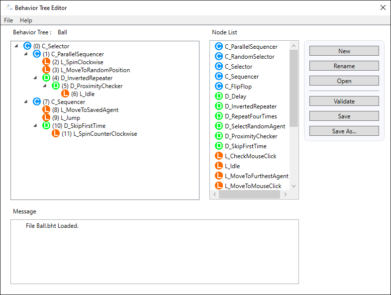
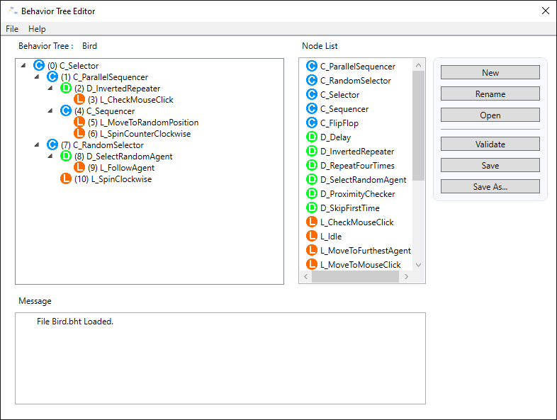
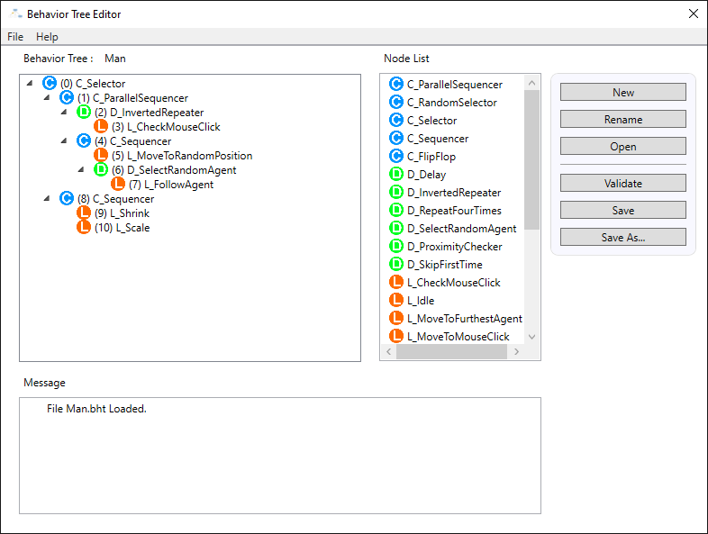
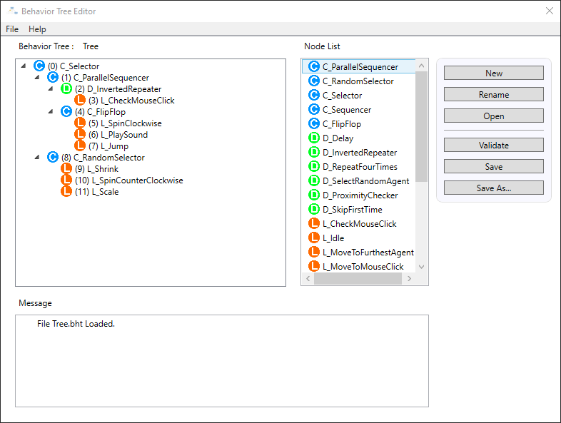

Game AI Systems
Overview
This project series focused on implementing core gameplay AI systems inside a given C++ engine, ending with a team-based procedural terrain project built in Unreal Engine. Over the 10-week course, I implemeneted several foundational AI systems used in modern games, including behavior trees, optimized A* pathfinding, and terrain analysis. Each milestone required integration into the existing framework.
Behavior Trees
I implemented a behavior tree system supporting core node categories such as control flow, decorators, and leaf/action nodes. Using this framework, I created multiple behavior trees that drove autonomous agents in an open simulation environment. The system emphasized debugging clarity, allowing behaviors to be iterated on by restructuring node hierarchies rather than rewriting logic.
Key focus: hierarchical decision-making, reusable AI logic, runtime evaluation.




Optimized A* Pathfinding
I implemented grid-based A* pathfinding with performance constraints designed to avoid naive implementations. The system integrated directly into the engine framework and supported obstacle navigation and dynamic path requests for moving agents. Particular attention was paid to data structures and heuristic usage to ensure predictable performance under real-time conditions.
Key focus: algorithmic efficiency, data-oriented design.
Terrain Analysis System
Building on the same grid representation used for pathfinding, I implemented a terrain analysis system that evaluated cells based on metrics such as openness, line-of-sight visibility, search history, and propagation. These evaluations enabled the AI to behave as though it was playing hide and seek, demonstrating how spatial reasoning ties to navigation systems.
Key focus: spatial metrics, AI reasoning over environment data.
Procedural Terrain Themer (Team Project)
For the final team project, we created a procedural terrain generation system in Unreal Engine using noise-based generation and material-driven biome theming. My primary contribution focused on technical analysis and documentation where I studied the implemented system, analyzed the blueprint architecture, and authored a research paper explaining the design decisions, generation pipeline, and practical outcomes of the terrain theming approach. This required reverse-engineering and translating implementation details into clear technical communication.
Key focus: Technical analysis, system documentation, and communication of implementation design.
Results & Takeaways
This project series gave me experience implementing relevant game AI systems from the ground up. I strengthened my understanding of:
- Behavior tree architecture and scalable decision systems
- Real-time pathfinding optimization beyond basic graph algorithms
- Terrain analysis as a bridge between navigation and tactical behavior
- Team-based development and system integration workflows